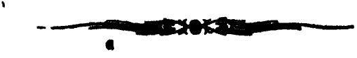

अथ
श्रीतन्त्रालोके

श्रीमन्महामाहेश्वराचार्याभिनवगुप्तविरचिते
श्रीजयरथकृतविवेकाव्यटीकोपेते
द्वात्रिंशमा ह्निकम् ।
शुद्धाशुद्धाध्वभिदा द्विगहरं मुद्रयत्यशेषजगत् ।
संविद्रूपतया यः कलयतु स किल्विषं सतां कालः ॥
इदानीं मुद्राविधिमभिधातुमुपक्रमते
अथ कथये मुद्राणां
गुवगमगीतमत्र विधिम् ।
तमेव आह
मुद्रा च प्रतिबिम्बात्मा
श्रीमद्देव्याख्ययामले ।
उक्ता बिम्बोदयश्रुत्या
वाच्यद्वयविवेचनात् ॥ १ ॥